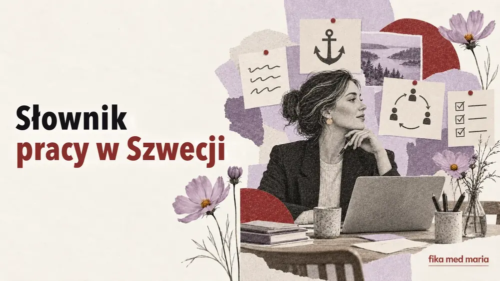

Prestigelös, förankra, avstämning: słownik, bez którego nie sposób zrozumieć pracy w Szwecji

W ofercie pracy napisano, że firma szuka en prestigelös lagspelare. Na spotkaniu trzeba förankra beslutet. W kalendarzu widnieje avstämning, a potem wszyscy czekają na återkoppling.
Każde słowo da się przetłumaczyć. Ale dosłowne tłumaczenie to za mało: za nim stoi cały model pracy.
Prestigelös
Prestigelös – osoba, która nie trzyma się kurczowo statusu, nie uważa pewnych zadań za „poniżej swojej godności” i potrafi przyznawać się do błędów.
W ofercie pracy często oznacza to oczekiwanie, że:
- współpracujesz, nie okazując wyższości;
- możesz zarówno zarządzać, jak i wykonywać praktyczną pracę;
- spokojnie przyjmujesz informację zwrotną;
- stawiasz wynik zespołu ponad osobisty prestiż.
To pozytywne słowo, ale na rozmowie kwalifikacyjnej lepiej nie poprzestawać na nazwaniu się prestigelös, tylko podać przykład takiego zachowania.
Förankra
Dosłownie – zakotwiczyć. W kontekście zawodowym förankra ett beslut oznacza omówienie decyzji z ważnymi uczestnikami i uzyskanie wystarczającego poparcia przed jej wdrożeniem.
Vi behöver förankra förslaget i teamet.
Musimy uzgodnić propozycję z zespołem.
To coś więcej niż poinformowanie o gotowej decyzji. Często chodzi o proces, w którym ludzie muszą zrozumieć logikę i mieć możliwość wypowiedzenia się.
Avstämning
Avstämning – krótka synchronizacja statusu, oczekiwań lub kolejnych kroków.
Ska vi boka en kort avstämning på fredag?
Umówimy się na krótką synchronizację w piątek?
To może być dziesięciominutowa rozmowa albo regularne spotkanie. Jeśli w kalendarzu wpisano tylko avstämning, warto dopytać o cel: status projektu, podział pracy czy omówienie problemu.
Återkoppling
Återkoppling – informacja zwrotna lub odpowiedź po rozpatrzeniu sprawy.
Jag återkopplar senast på torsdag.
Wrócę z odpowiedzią najpóźniej w czwartek.
To bardzo przydatny czasownik w korespondencji. Nie obiecuje gotowego rozwiązania od razu, ale określa, kiedy można się spodziewać twojej odpowiedzi.
Delaktighet i samsyn
Delaktighet – zaangażowanie i możliwość uczestniczenia.
Samsyn – wspólne rozumienie sytuacji lub uzgodniony punkt widzenia.
Det är viktigt att alla känner sig delaktiga.
Ważne, żeby wszyscy czuli się zaangażowani.
Vi behöver skapa en samsyn kring målen.
Musimy wypracować wspólne rozumienie celów.
Te słowa wyjaśniają, dlaczego decyzja bywa omawiana dłużej, niż oczekuje osoba z bardziej dyrektywnej kultury pracy.
Högt i tak
Dosłownie – „wysoki sufit”. W zespole oznacza to atmosferę, w której można wyrażać odmienne opinie i nie bać się różnicy zdań.
Vi har högt i tak och uppskattar nya idéer.
Ale samo sformułowanie w ofercie pracy nie gwarantuje jeszcze prawdziwej otwartości. Na rozmowie kwalifikacyjnej można zapytać:
Kan ni ge ett exempel på hur ni hanterar oenighet i teamet?
Eget ansvar i frihet under ansvar
Eget ansvar oznacza osobistą odpowiedzialność za organizację pracy. Frihet under ansvar – swobodę wyboru sposobu wykonania zadania, pod warunkiem że wynik zostanie osiągnięty, a ustalenia dotrzymane.
Może to być wygodne, ale trzeba umieć:
- zadawać pytania doprecyzowujące;
- planować samodzielnie;
- informować o ryzykach, zanim minie termin;
- nie czekać na szczegółową instrukcję do każdego kroku.
Jak najlepiej powiedzieć koledze z pracy: „Nie mam jeszcze odpowiedzi, ale wrócę do ciebie jutro”?
Jag har inget svar än, men jag återkommer i morgon.
Spróbuj zamienić i morgon na konkretny termin, żeby zdanie brzmiało jeszcze bardziej wiarygodnie.
Na zajęciach indywidualnych możemy pracować z twoimi ofertami pracy, korespondencją, spotkaniami i słownictwem zawodowym – a nie z abstrakcyjnym „biurem z podręcznika”. Zajęcia indywidualne.
Czy trzeba używać tych słów na rozmowie kwalifikacyjnej?
Tylko wtedy, gdy naprawdę je rozumiesz i potrafisz poprzeć przykładem. Mechaniczne powtarzanie słów z oferty pracy brzmi nienaturalnie.
Co znaczy återkomma w korespondencji?
Wrócić z odpowiedzią albo podjąć temat później: Jag återkommer på måndag.